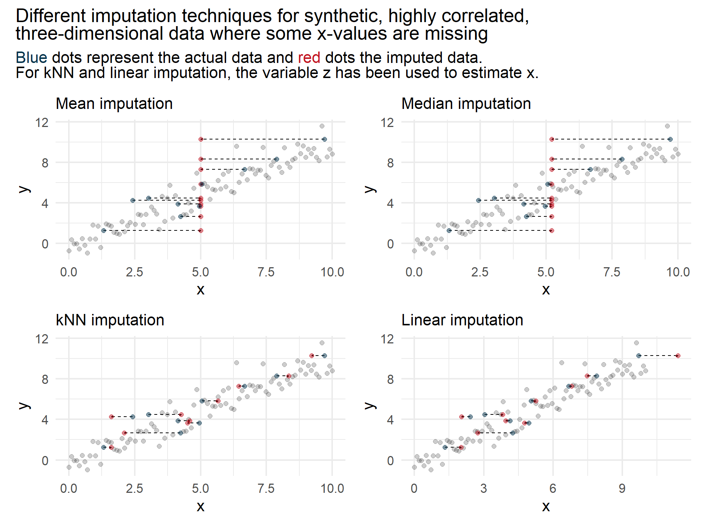
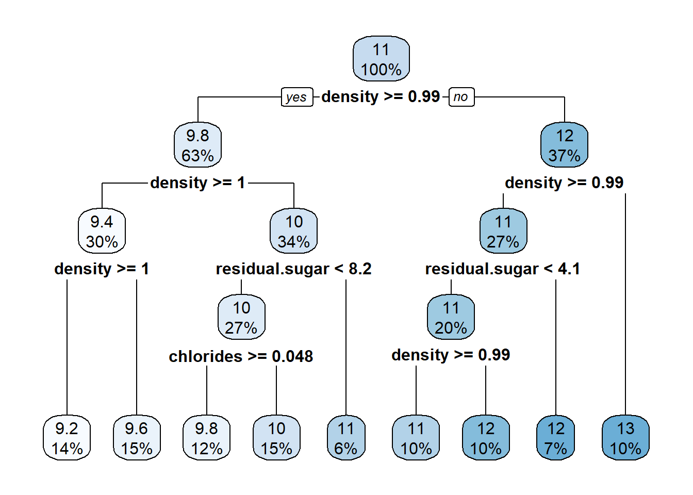
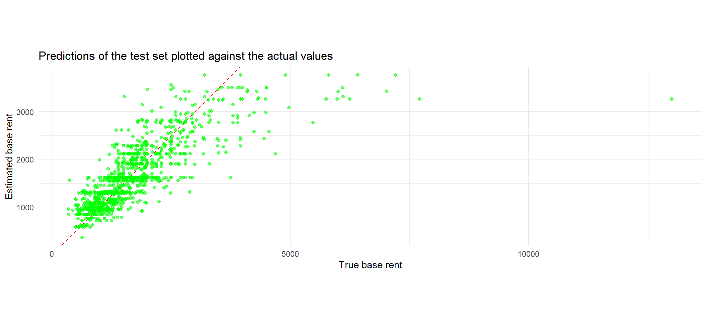

library("tidyverse")
library("tidymodels")4 Regression Trees
In this fourth exercise session, we want to introduce regression trees. Regression trees, up to this day, are still one of the most important statistical models as they address important aspects like interpretability but also versatility in terms of the prediction approach since they are non-linear. Another important aspect is their integration with other, more powerful statistical models like random forests, which we will cover in a later session.
Besides regression, tree-based models can also be used for classification tasks, however, in this exercise in particular, we will focus on the regression case and consider classification tasks later on.
Some of the packages we will use throughout the session.
4.1 Intermezzo: Imputation
When working with data sets, missing values can disrupt analysis and modeling processes. In previous exercises when working with the rental listing data set, we resorted to either remove missing values completely or (in case of numerical or ordinal features) assign the worst possible value. Both of these approaches have significant drawbacks:
By removing every
NAvalue we potentially remove a large chunk of the underlying data which weakens the training capabilities.Assigning the worst possible value to each missing observation introduces a bias which can distort the true underlying distribution.
To handle these drawbacks, several imputation techniques are commonly used:
Mean imputation replaces missing values with the average of the observed data for a given feature, offering simplicity but also risking distortion if the data contains outliers.
Median imputation substitutes missing entries with the median value, making it more robust against extreme values.
Linear imputation estimates the missing values using a linear model making it particularly robust if there are highly correlated features.
The approaches above require the missing data to be numerical, else we can’t really calculate a mean or median.
- k-nearest neighbors imputation identifies the k most similar records and fills missing values using their observed data. This approach can also handle ordinal or even nominal data.
Consider the following two synthetic data set examples:
set.seed(123)
n<- 100
data_synth_high_corr <- tibble(
x = seq(0,10,length.out = n),
z = x+rnorm(n,0,1.5),
y = x+rnorm(n),
)
data_synth_low_corr <- tibble(
x = seq(0,10,length.out = n),
z = exp(cos(x)),
y = x+rnorm(n),
)Both data sets consist of three variables \(x,y,z\), where both, \(y\) and \(z\) are generated using \(x\). In the first data set all three variables are highly correlated, whereas in the second data set only \(x\) and \(y\) are highly correlated. Depending on the complexity of the imputation technique, correlation between variables can determine how well they perform.
Consider the case where \(10\%\) of the \(x\)-values are removed. We can apply all four imputation techniques to impute those missing values:

In the figure above we can observe that the highly correlated data is estimated better using the more sophisticated imputation models compared to the simple mean and median imputation.

While sophisticated imputation techniques seem to outperform simple techniques on highly correlated data, simple imputation techniques seem to be a good choice if the different features are less correlated.
However, as a rule of thumb, if computational resources are available, I recommend trying different techniques and choose the one that yields best validation results.
4.2 Regression trees in R
We use the same white wine data set as in Session 02 for the introduction.
4.2.1 Data preprocessing, recipe and workflow creation
For detailed description of each parameter see Cortez et al.
The goal is to predict the alcohol contents of each wine given different attributes like density and residual sugar.
The following code cell contains the usual preprocessing steps required for fitting a model. For details, see tutorial on recipes and workflows.
set.seed(123)
data_wine <- read.csv("data/winequality-white.csv")
split_wine <- initial_split(data_wine)
data_train_wine<- training(split_wine)
data_test_wine<- testing(split_wine)
rec_wine <- recipe(
alcohol ~.,
data = data_train_wine
)
wf_wine <- workflow() %>%
add_recipe(rec_wine)4.2.2 Fitting a basic tree
Fitting a basic tree model is as simple as fitting any other model using the tidymodels framework. The decision_tree function creates an {rpart} tree object. Since decision entail regression and classification trees, we have to specify the mode as "regression". Using the fit function, we can directly fit the model and evaluate it on the test set using the augment function and a preferred metric:
tree_spec_basic<- decision_tree(
mode = "regression"
)
wf_wine <- wf_wine %>% add_model(tree_spec_basic)
tree_res_basic <- wf_wine %>%
fit(data_train_wine)
tree_res_basic %>%
augment(data_test_wine) %>%
rmse(.pred,alcohol)# A tibble: 1 × 3
.metric .estimator .estimate
<chr> <chr> <dbl>
1 rmse standard 0.632Since we have not passed any hyperparameters, the following rpart specific default parameters are used:
min_n = 20,tree_depth = round(minsplit/3), andcost_complexity = 0.01,
To potentially obtain better results, the parameters should be tuned. We, therefore, have to define a new model specification and set the tuneable parameters to tune().
tree_spec_tune <- decision_tree(
mode = "regression",
min_n = tune(),
tree_depth = tune(),
cost_complexity = tune()
)In Exercise 03, Section 3.1.2.3, we specified the candidate hyperparameters by defining a data frame with the respective hyperparameter names and candidate values, or by setting the grid attribute in the tune_grid function to a positive number indicating the number of automatically created candidate parameters.
Instead of manually creating a data frame, we can use the extract_parameter_set_dials() function to extract all tuneable parameters and pass the output into the grid_regular() function. The grid_regular() function takes a positiv number levels \(=n\) as an input and returns a data frame where each column contains \(n^{m}\) candidate values, where \(m\) is the number of tunable hyperparameters.
tree_grid <- tree_spec_tune %>%
extract_parameter_set_dials() %>%
grid_regular(levels = 5)Since there are \(m = 3\) hyperparameters and levels is set to \(5\), the data frame tree_grid contains \(125\) combinations of candidate hyperparameters.
After specifying the candidate hyperparameters, we can tune the models following the standard procedure:
set.seed(123)
folds_wine <-vfold_cv(data_train_wine,5)
multi_metric <- metric_set(rmse,rsq)
wf_wine <- wf_wine %>%
update_model(tree_spec_tune)
tree_res_tune <- wf_wine %>%
tune_grid(
grid = tree_grid,
resamples = folds_wine,
metrics = multi_metric
)Given the tuning results, we can visualize our finding with the autoplot() function.
tree_res_tune %>% autoplot()+
theme_minimal(base_size = 12)+
theme(legend.position = "bottom")Using the select_best() function, we can select the best set of hyperparameters. After extracting these, passing them to the finalize_workflow() function together with the workflow object, updates the finalizes the workflow object by replacing the hyperparameters set to tune() with the selected hyperparameters. Passing the finalized workflow into the last_fit() function together with the whole data split fits the final model on the whole training data and evaluates it on the test data.
tree_res_final <- tree_res_tune %>%
select_best(metric = "rmse") %>%
finalize_workflow(wf_wine,.) %>%
last_fit(split_wine)
tree_res_final %>%
collect_metrics()# A tibble: 2 × 4
.metric .estimator .estimate .config
<chr> <chr> <dbl> <chr>
1 rmse standard 0.496 Preprocessor1_Model1
2 rsq standard 0.837 Preprocessor1_Model1Comparing the RMSE of the basic model (\(0.632\)) with the tuned model’s RMSE (\(0.496\)) shows that the tuning improved the performance of the tree!
4.2.3 Visualizing results
Since the basic tree only has a depth parameter with value \(5\) compared to the tuned tree with depth \(15\), we will consider the basic tree for a visualization. The {rpart.plot} library contains the eponymous function rpart.plot() that visualizes trees in a top-down fashion. Note: Before applying the rpart.plot() function, the fit_engine has to be extracted from the model. Strictly speaking, the object tree_res_basic contains a workflow object which in turns contains the actual model.
Each node contains the percentage of samples at the specific level in the bottom entry and an estimate in the top entry. For example, after the first split, the left node contains \(63\%\) of all samples and the estimate for the alcohol contents is \(9.8\) percent. The node on the right contains the remaining \(37\%\) percent with an estimated alcohol content of \(12\) percent. The branches of the tree contain splitting conditions.
library(rpart.plot)
tree_res_basic %>%
extract_fit_engine() %>%
rpart.plot(roundint=FALSE)
4.2.4 cp-table
The complexity parameter (cp) table is a useful tool for asessing model performance as well. It contains the complecity parameter itself, and for each value the respective split, relative error, cross-validation error and cross-validation standard deviation.
The relative error for split \(k>1\) can be calculated according to the formula
\[\begin{equation} \mathrm{relative error}_k = \mathrm{relative error}_{k-1}-\mathrm{CP}_{k-1} \end{equation}\]
and the relative error for \(k=0\) is set to \(1\).
The last entry of the column rel error contains the unexplained variance in the data, i.e. \(1-R^2\). We can, therefore, calculate \(R^2 = 1-\mathrm{rel error}_n\), where \(n\) is the last row of the cp-table.
tree_res_basic %>%
extract_fit_engine() %>%
printcp()
Regression tree:
rpart::rpart(formula = ..y ~ ., data = data)
Variables actually used in tree construction:
[1] chlorides density residual.sugar
Root node error: 5587.9/3673 = 1.5213
n= 3673
CP nsplit rel error xerror xstd
1 0.524872 0 1.00000 1.00029 0.0186933
2 0.065803 1 0.47513 0.48862 0.0114048
3 0.063815 2 0.40932 0.41249 0.0100885
4 0.030752 3 0.34551 0.36373 0.0091955
5 0.024820 4 0.31476 0.33361 0.0087150
6 0.022225 5 0.28994 0.31958 0.0081634
7 0.010587 6 0.26771 0.29882 0.0076719
8 0.010347 7 0.25713 0.27522 0.0074280
9 0.010000 8 0.24678 0.27426 0.00741554.3 Exercises
4.3.1 Theoretical exercises
In this first exercise, we want to gain intuition for the theoretical aspects of regression trees.
Before diving into the process of building and evaluating a tree rigorously, we first consider different representations of binary trees, check their validity, and decide for simple datasets, whether they are suitable for regression trees.
Exercise 4.1 Consider the following two splits of the feature space generated by two features \(X_1\) and \(X_2\). Argue, which one of the splits was generated by a binary splitting tree!
Exercise 4.2 Consider the following split generated by a binary tree. \(t_1,…,t_4\) denote the splitting conditions, \(R_1,…,R_4\) the final regions, and \(X_1,X_2\) the variables used for evaluating the splitting conditions.
Draw a binary tree that corresponds to the split given below.

Exercise 4.3 For the following scatterplots, decide whether a simple linear model ( \(y=\hat \beta_1x+\hat \beta_0\) ) or a regression tree should be chosen for modeling the data.
Exercise 4.4 Now, that we have considered some visual examples of trees and gained an intuition of situations where trees might be a suitable model, we now want to focus on the process of building a tree.
Consider the following dataset. Calculate the first optimal splitting point with respect to \(x\).
data_tmp <- tibble(
x = c(1,0.5,2.0,5.5,4.5),
y = c(10,7,8,3,4)
)
data_tmp# A tibble: 5 × 2
x y
<dbl> <dbl>
1 1 10
2 0.5 7
3 2 8
4 5.5 3
5 4.5 4In order to do so, you have to proceed as follows:
- Derive the order statistics of \(\{x_1,...,x_n\}\)
- Derive the set \(S := \left\{\frac{1}{2}(x_{(r)}+x_{(r+1)}):r=1,...,n-1\right\}\) of all potential splitting points.
- For each potential splitting point, derive the regions \(R_1\) and \(R_2\) and calculate the estimate \(\hat y_1\) and \(\hat y_2\) for the respective regions.
- Calculate the loss \(\mathcal{L}(y,\hat y) := \sum_{i:x_i\in R_1} (y_i-\hat y)^2 + \sum_{i:x_i\in R_2}(y_i-\hat y)^2\).
- Derive the optimal splitting point by settling for the splitting point leading to the smallest loss \(\mathcal{L}\).
Exercise 4.5 Given the tibble data, create a simple scatter plot and add a dashed line indicating the initial splitting point. An example of what such a plot could look like can be found below.

Exercise 4.6 Calculate the improvement of the given split. Recall, that the improvement of a split is given by
\[ \frac{\mathrm{MSE}_1 \cdot n_1 - (\mathrm{MSE}_2 \cdot n_2 + \mathrm{MSE}_3 \cdot n_3)}{\mathrm{MSE_1}\cdot n_1}, \]
where \(\mathrm{MSE}_1\) denotes the mean squared error of the region before the split and \(\mathrm{MSE_2}\) and \(\mathrm{MSE_3}\) are the mean square errors of the respective regions after the split. \(n_i,\, i=1,2,3\) denotes the number of samples in the respective region.
4.3.2 Programming Exercises
In this exercise, we want to apply our theoretical knowledge to training a tree-based model on the Apartment rental offers in Germany dataset. As in Session 03 we will be using the rental offers in Munich to build a predictive model for the base rent.
Exercise 4.7 Import the data set, create a training/testing split and a \(5\)-fold CV object on the training data using set.seed(24).
Exercise 4.8 Explain the syntax and semantics of the following code snippet.
data_muc %>%
select_if(where(~sum(is.na(.))>0)) %>%
is.na() %>%
colSums() %>%
tibble( names = names(.),
n = .) %>%
arrange(desc(n))# A tibble: 12 × 2
names n
<chr> <dbl>
1 heatingCosts 3565
2 petsAllowed 2013
3 interiorQual 1584
4 firingTypes 1243
5 condition 1206
6 heatingType 1108
7 typeOfFlat 847
8 yearConstructed 751
9 floor 631
10 totalRent 440
11 serviceCharge 150
12 pricetrend 22Exercise 4.9 Create a recipe based on the following description:
Create a recipe for a regression model with baseRent as the target variable and all other columns as predictors.
Update the role of the scoutId column to “ID”.
Remove the following specified columns from the dataset:
c("serviceCharge","heatingType","picturecount","totalRent", "firingTypes","typeOfFlat","noRoomsRange", "petsAllowed", "livingSpaceRange","regio3","heatingCosts", "floor", "date", "pricetrend")[1] "serviceCharge" "heatingType" "picturecount" "totalRent" [5] "firingTypes" "typeOfFlat" "noRoomsRange" "petsAllowed" [9] "livingSpaceRange" "regio3" "heatingCosts" "floor" [13] "date" "pricetrend"Convert
interiorQualandconditioninto ordered factors with specified levels andgeo_plzinto an unordered factor.Create a specification that assigns a previously unseen factor level to
newusing thestep_novel()function.Convert
geo_plzinto dummy variables.Create ordinal scores for every ordered predictor.
Impute missing values for all ordered predictors using k-nearest neighbors.
Filter rows in the dataset to retain only observations where
baseRentis at most \(4000\) EUR andlivingSpaceis at most \(200\) sqm.
Exercise 4.10 Create an instance of the decision_tree class where the parameters min_n,tree_depth, and cost_complexity are set to tune.
Exercise 4.11 Create a workflow and add the previously specified model and recipe.
Exercise 4.12 Instead of specifying the grid manually, use the extract_parameter_set_dials function to create a regular grid with \(4\) levels.
Exercise 4.13 Tune the model on the cross-validation set created in Exercise 4.7. As for the Use the following metric set for evaluating the tuning results.
multi_metric <- metric_set(rmse,rsq)Exercise 4.14 Given the following plot. What can you say about the relationship between the tree parameters Tree Depth, Minimal Node Size, and Cost-Complexity Parameter with respect to the RMSE?
Exercise 4.15 Select the best model with respect to the metric MAE and fit a final model using these parameters. Then, fit the best model on the whole training data and evaluate it on the test data using the previously defined metrics set.
Exercise 4.16 It is usually easier to get a feeling for model performance by visualizing the results. One way to do that would be to plot the predicted values of our model against the true values. By adding a simple line through the origin with slope one, we can then evaluate the estimates as follows:
Points that are closely scattered around this line are well predicted, whereas points further away from this line indicate that the model performed badly.
The goal of this exercise is for you to rebuild the plot that is depicted below.
4.4 Solutions
Solution 4.1 (Exercise 4.1). Split 1 can’t be produced by a binary tree, because the bottom-center rectangle is overlapping the left-most rectangle.
Solution 4.2 (Exercise 4.2).
Solution 4.3 (Exercise 4.3).
- For the data in the first plot, we should use a simple linear model, as the data seems to follow a simple linear trend.
- A linear model is most likely not suitable for modelling this data, as the shape of the cloud of points looks more like a parabola instead of a line.
- As the third plot consists of points that can be assigned to four (almost) distinct regions, a regression tree seems to be more suitable than a linear model.
- At first, the data in the fourth plot seems to be too messy to make a decision. However, upon closer inspection, there are several indicators that a linear model might perform better:
- The points in the center seem to follow a positive linear trend.
- The deviations of points around this linear trend seem to be distributed in a way, that there are more points towards the line than further away. So the residuals could be assumed to be normally distributed.
Solution 4.4 (Exercise 4.4).
loss_x<- function(data,r) {
xr = sort(data$x)[r]
y1 <- mean(data$y[data$x<=xr])
y2 <- mean(data$y[data$x>xr])
loss<-sum((data$y[data$x<=xr]-y1)^2) + sum((data$y[data$x>xr]-y2)^2)
return(loss)
}Since we are interested in finding the optimal split with respect to \(x_1=x\), consider the sets of all possible splits \[\begin{equation*} S := \left\{\frac{1}{2}(x_{(r)}+x_{(r+1)}):r=1,...,n-1\right\} = \{0.75,1.5,3.25,5\}. \end{equation*}\]
Here, \(\{x_{(r)},\, r = 1,...,n\} = \{0.5,1,2,4.5,5.5\}\) denotes the order statistic of \(x\).
For \(r=1\) we have \(s = 0.75\) and \[\begin{align*} R_1(1,0.75) &= \{x: x \leq 0.75\} = \{0.5\},\\ R_2(1,0.75) &= \{x: x > 0.75\} = \{1.0,2.0,5.5,4.5\}. \end{align*}\]
Then,
\[\begin{align*} \hat y_1 &= \frac{1}{|R_1|}\sum_{i:x_{i}\in R_1} y_i = \frac{1}{1}\cdot 7 = 7,\\ \hat y_2 &= \frac{1}{|R_2|}\sum_{i:x_{i}\in R_2} y_i = \frac{1}{4}(10+8+3+4) = 6.25. \end{align*}\]
Given the above, we can calculate the Loss with respect to \(s = 0.75\), which is given by
\[\begin{align*} \mathcal{L}(y,\hat y) &= \sum_{i:x_{i}\in R_1} (y_i-\hat y_{R_1})^2 + \sum_{i:x_{i}\in R_2} (y_i-\hat y_{R_2})^2 \\ &= (7 -7)^2 + (10-6.25)^2 + (8-6.25)^2 + (3-6.25)^2 + (4-6.25)^2\\ &= 32.75 \end{align*}\]
loss_x(data_tmp,1)[1] 32.75For \(r=2\) we have \(s = 1.5\) and \[\begin{align*} R_1(1,1.5) &= \{x: x \leq 1.5\} = \{0.5,1.0\},\\ R_2(1,1.5) &= \{x: x > 1.5\} = \{2.5,5.5,4.5\}. \end{align*}\] Then, \[\begin{align*} \hat y_1 &= \frac{1}{|R_1|}\sum_{i:x_{i}\in R_1} y_i = \frac{1}{2}\cdot (7+10) = 8.5,\\ \hat y_2 &= \frac{1}{|R_2|}\sum_{i:x_{i}\in R_2} y_i = \frac{1}{3}(8+3+4) = 5. \end{align*}\] Given the above, we can calculate the Loss with respect to \(s = 1.5\), which is given by
\[\begin{align*} \mathcal{L}(y,\hat y) &= \sum_{i:x_{i}\in R_1} (y_i-\hat y_{R_1})^2 + \sum_{i:x_{i}\in R_2} (y_i-\hat y_{R_2})^2 \\ &= (7-8.5)^2 + (10-8.5)^2 + (8-5)^2 + (3-5)^2 + (4-5)^2\\ &= 18.5 \end{align*}\]
loss_x(data_tmp,2)[1] 18.5For \(r=3\) we have \(s = 3.25\) and \[\begin{align*} R_1(1,3.25) &= \{x: x \leq 3.25\} = \{0.5,1.0, 2.5 \},\\ R_2(1,3.25) &= \{x: x > 3.25\} = \{5.5,4.5\}. \end{align*}\] Then, \[\begin{align*} \hat y_1 &= \frac{1}{|R_1|}\sum_{i:x_{i}\in R_1} y_i = \frac{1}{3}\cdot (7+10+8) = 8.333,\\ \hat y_2 &= \frac{1}{|R_2|}\sum_{i:x_{i}\in R_2} y_i = \frac{1}{2}(3+4) = 3.5. \end{align*}\] Given the above, we can calculate the Loss with respect to \(s = 4\), which is given by
\[\begin{align*} \mathcal{L}(y,\hat y) &= \sum_{i:x_{i}\in R_1} (y_i-\hat y_{R_1})^2 + \sum_{i:x_{i}\in R_2} (y_i-\hat y_{R_2})^2 \\ &= (7-8.333)^2 + (10-8.333)^2 + (8-8.333)^2 + (3-3.5)^2 + (4-3.5)^2\\ &= 5.167 \end{align*}\]
loss_x(data_tmp,3)[1] 5.166667For \(r=4\) we have \(s = 5\) and \[\begin{align*} R_1(1,5) &= \{x: x \leq 5\} = \{0.5,1.0, 2.5,4.5 \},\\ R_2(1,5) &= \{x: x > 5\} = \{5.5\}. \end{align*}\] Then, \[\begin{align*} \hat y_1 &= \frac{1}{|R_1|}\sum_{i:x_{i}\in R_1} y_i = \frac{1}{4}\cdot (7+10+8+4) = 7.25,\\ \hat y_2 &= \frac{1}{|R_2|}\sum_{i:x_{i}\in R_2} y_i = \frac{1}{1}\cdot 3 = 3. \end{align*}\] Given the above, we can calculate the Loss with respect to \(s = 5\), which is given by
\[\begin{align*} \mathcal{L}(y,\hat y) &= \sum_{i:x_{i}\in R_1} (y_i-\hat y_{R_1})^2 + \sum_{i:x_{i}\in R_2} (y_i-\hat y_{R_2})^2 \\ &= (7-7.25)^2 + (10-7.25)^2 + (8-7.25)^2 + (4-7.25)^2 + (3-3)^2\\ &= 18.75 \end{align*}\]
loss_x(data_tmp,4)[1] 18.75Since \(\mathcal{L}(y,\hat y)\) is the lowest for \(r=3\), i.e., \(\mathcal{L}(y,\hat y) = 5.167\), \(s = 3.25\) is the optimal splitting point with respect to \(x\).
Solution 4.5 (Exercise 4.5).
title_text = "Scatterplot showing the <span style='color:red'>optimal threshold</span> for an initial split with respect to x"
data_tmp %>% ggplot(aes(x,y))+
geom_point(size = 3, alpha = 0.7) +
geom_vline(xintercept = 3.25, linetype = "dashed", color = "red") +
theme_minimal()+
theme(
plot.title = element_markdown()
)+
labs( x = "x",
title = title_text)Solution 4.6 (Exercise 4.6). The improvement is given by the following term.
\[\begin{equation*} \frac{\mathrm{MSE}_1 \cdot n_1 - (\mathrm{MSE}_2 \cdot n_2 + \mathrm{MSE}_3 \cdot n_3)}{\mathrm{MSE_1}\cdot n_1} \end{equation*}\]
Calculating \(MSE_i\) for \(i=1,2,3\) yields
\[\begin{align*} n_1 \cdot \mathrm{MSE}_1 &= (10-6.4)^2 + (7-6.4)^2 + (8-6.4)^2 + (3-6.4)^2 + (4-6.4)^2 = 33.2, \\ n_2 \cdot \mathrm{MSE}_2 &= (7-8.333)^2 + (10-8.333)^2 + (8-8.333)^2 = 4.667, \\ n_3 \cdot \mathrm{MSE}_3 &= (3-3.5)^2 + (4-3.5)^2 = 0.5\ . \end{align*}\]
The improvement for this split is therefore
\[\begin{equation*} \frac{\mathrm{MSE}_1 \cdot n_1 - (\mathrm{MSE}_2 \cdot n_2 + \mathrm{MSE}_3 \cdot n_3)}{\mathrm{MSE_1}\cdot n_1} = \frac{33.2 - (4.667 + 0.5)}{33.2} = 0.8444 \end{equation*}\]
Solution 4.7 (Exercise 4.7).
data_muc <- read.csv("data/rent_muc.csv")set.seed(24)
split_rent <- initial_split(data_muc)
data_train <- training(split_rent)
data_test <- testing(split_rent)
folds <- vfold_cv(data_train, v = 5)Solution 4.8 (Exercise 4.8).
The
%>%operator passes the data setdata_mucto the next function.select_ifselects columns in a data frame based on the condition thatwhere(~ sum(is.na(.)) > 0)which checks if the sum ofNAvalues in a column is greater than 0.The
is.na()function checks whether an entry in the data set isNAor not and returnsTrueorFALSErespectively. Therefore, by applying theis.na()function, a data set containing only boolean values is returned.The
colSumsfunction adds up all values in each column, whereTRUE = 1andFALSE = 0, returning a named vector containing the sum of allTRUEvalues and the respective variable names.Then, the data set is transformed using the
tibble()function such that the returned tibble only consists of two columns containing the variable name and column sum.In the last step, the data set is ordered with respect to the number of missing values in descending order using the
arrange()anddesc()function.
Solution 4.9 (Exercise 5.6).
rec_rent <- recipe(
formula = baseRent ~.,
data = data_train
) %>%
update_role(scoutId, new_role = "ID") %>%
step_select(!c("serviceCharge","heatingType","picturecount","totalRent",
"firingTypes","typeOfFlat","noRoomsRange", "petsAllowed",
"livingSpaceRange","regio3","heatingCosts", "floor",
"date", "pricetrend")) %>%
step_mutate(
interiorQual = factor(
interiorQual,
levels = c("simple", "normal", "sophisticated", "luxury"),
ordered = TRUE
),
condition = factor(
condition,
levels = c("need_of_renovation", "negotiable","well_kept",
"refurbished","first_time_use_after_refurbishment",
"modernized","fully_renovated", "mint_condition",
"first_time_use"),
ordered = TRUE
),
geo_plz = factor(geo_plz)
)%>%
step_novel(geo_plz)%>%
step_dummy(geo_plz)%>%
step_ordinalscore(all_ordered_predictors())%>%
step_impute_knn(all_predictors()) %>%
step_filter(baseRent <= 4000, livingSpace <= 200)Solution 4.10 (Exercise 4.10).
model_rt_tune <-
decision_tree(
min_n = tune(),
tree_depth = tune(),
cost_complexity = tune()
) %>%
set_mode("regression") %>%
set_engine("rpart")Solution 4.11 (Exercise 4.11).
wf_rent <-
workflow() %>%
add_recipe(rec_rent) %>%
add_model(model_rt_tune)Solution 4.12 (Exercise 4.12).
tree_grid <- wf_rent %>%
extract_parameter_set_dials %>%
grid_regular(levels = 4)Solution 4.13 (Exercise 4.13).
multi_metric <- metric_set(rmse,rsq,mae)rt_res <-
wf_rent %>%
tune_grid(
grid = tree_grid,
metrics = multi_metric,
resamples = folds
)To speed things up, the following tibble already contains the optimal parameters according to the tuning procedure:
rt_res_tune_best <- tibble(
min_n = 14,
tree_depth = 10,
cost_complexity = 0.0001
)Solution 4.14 (Exercise 4.14).
autoplot(rt_res) + theme_minimal()- Tree Depth:
- Increasing tree depth (lines for depths 1, 5, 10, 15) generally reduces the RMSE across all plots, indicating better model performance as depth grows.
- However, for deeper trees, RMSE increases when the Cost-Complexity Parameter is high, due to over-regularization.
- Minimal Node Size:
- Smaller minimal node sizes (e.g., 2) allow the tree to split more finely, resulting in lower RMSE when the Cost-Complexity Parameter is low.
- Larger minimal node sizes (e.g., 40) limit splitting, which leads to higher RMSE across all complexity values.
- Cost-Complexity Parameter:
- A small Cost-Complexity Parameter (e.g., (10^{-8})) corresponds to minimal pruning, leading to low RMSE (better performance).
- As the Cost-Complexity Parameter increases, the tree gets pruned more aggressively, and RMSE rises, especially for shallow trees or larger node sizes.
Solution 4.15 (Exercise 4.15).
rt_res_best<- rt_res %>%
select_best(metric = "mae")
last_rt_fit <- wf_rent %>%
finalize_workflow(rt_res_best) %>%
last_fit(split_rent)
last_rt_fit %>% collect_metrics()Using the parameters from the pre-specified tibble to avoid tuning time:
last_rt_fit <- wf_rent %>%
finalize_workflow(rt_res_tune_best) %>%
last_fit(split_rent)
last_rt_fit %>% collect_metrics()# A tibble: 2 × 4
.metric .estimator .estimate .config
<chr> <chr> <dbl> <chr>
1 rmse standard 622. Preprocessor1_Model1
2 rsq standard 0.616 Preprocessor1_Model1Solution 4.16 (Exercise 4.16).
title_text <- "Predictions of the test set plotted against the actual values"
last_rt_fit %>%
collect_predictions() %>%
ggplot(aes(baseRent, .pred)) +
geom_abline(slope = 1, lty = 2, color = "red", alpha = 1) +
geom_point(alpha = 0.6, color = "green")+
labs(
x = "True base rent",
y = "Estimated base rent",
title = title_text
)+
coord_fixed()
4.5 Session Info
sessionInfo()R version 4.2.3 (2023-03-15 ucrt)
Platform: x86_64-w64-mingw32/x64 (64-bit)
Running under: Windows 10 x64 (build 22631)
Matrix products: default
locale:
[1] LC_COLLATE=German_Germany.utf8 LC_CTYPE=German_Germany.utf8
[3] LC_MONETARY=German_Germany.utf8 LC_NUMERIC=C
[5] LC_TIME=German_Germany.utf8
attached base packages:
[1] stats graphics grDevices utils datasets methods base
other attached packages:
[1] rpart.plot_3.1.2 rpart_4.1.23 patchwork_1.3.0 ggtext_0.1.2
[5] yardstick_1.3.1 workflowsets_1.1.0 workflows_1.1.4 tune_1.2.1
[9] rsample_1.2.1 recipes_1.1.0 parsnip_1.2.1 modeldata_1.4.0
[13] infer_1.0.7 dials_1.3.0 scales_1.3.0 broom_1.0.7
[17] tidymodels_1.2.0 lubridate_1.9.3 forcats_1.0.0 stringr_1.5.1
[21] dplyr_1.1.4 purrr_1.0.2 readr_2.1.5 tidyr_1.3.1
[25] tibble_3.2.1 ggplot2_3.5.1 tidyverse_2.0.0
loaded via a namespace (and not attached):
[1] DiceDesign_1.10 tools_4.2.3 backports_1.4.1
[4] utf8_1.2.3 R6_2.5.1 colorspace_2.1-0
[7] nnet_7.3-19 withr_3.0.1 tidyselect_1.2.1
[10] compiler_4.2.3 cli_3.6.2 xml2_1.3.6
[13] labeling_0.4.3 commonmark_1.9.1 digest_0.6.35
[16] rmarkdown_2.28 pkgconfig_2.0.3 htmltools_0.5.8.1
[19] parallelly_1.37.1 lhs_1.1.6 fastmap_1.1.1
[22] htmlwidgets_1.6.4 rlang_1.1.3 rstudioapi_0.17.0
[25] generics_0.1.3 farver_2.1.1 jsonlite_1.8.8
[28] magrittr_2.0.3 Matrix_1.6-0 Rcpp_1.0.12
[31] munsell_0.5.1 fansi_1.0.4 GPfit_1.0-8
[34] lifecycle_1.0.4 furrr_0.3.1 stringi_1.8.3
[37] yaml_2.3.8 MASS_7.3-58.2 grid_4.2.3
[40] parallel_4.2.3 listenv_0.9.1 lattice_0.22-6
[43] splines_4.2.3 gridtext_0.1.5 hms_1.1.3
[46] knitr_1.43 pillar_1.9.0 markdown_1.13
[49] future.apply_1.11.2 codetools_0.2-20 glue_1.6.2
[52] evaluate_1.0.1 data.table_1.15.4 vctrs_0.6.5
[55] tzdb_0.4.0 foreach_1.5.2 gtable_0.3.5
[58] future_1.33.0 xfun_0.43 gower_1.0.1
[61] prodlim_2023.08.28 class_7.3-22 survival_3.6-4
[64] timeDate_4041.110 iterators_1.0.14 hardhat_1.4.0
[67] lava_1.8.0 timechange_0.3.0 globals_0.16.3
[70] ipred_0.9-14